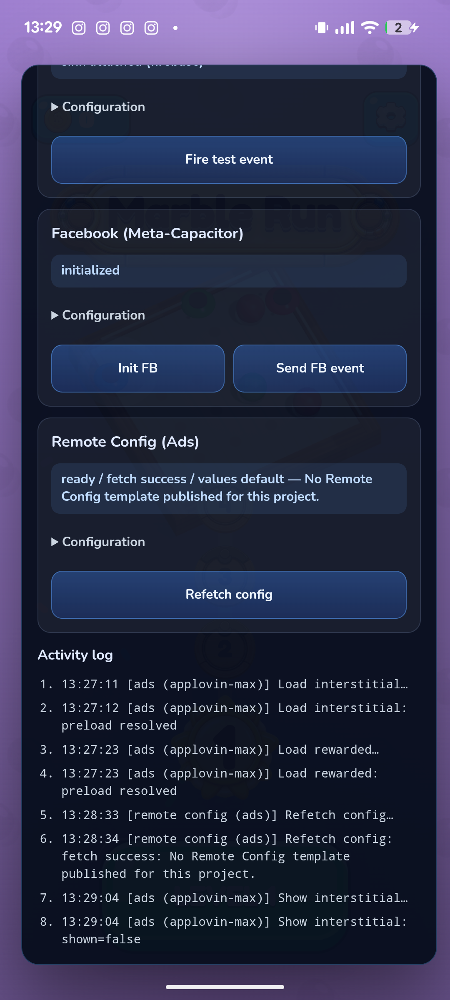

Device evidence · Pixel 6a · 2026-07-27 · Marble Run (com.basegamelab.marblerun)
MAX ads cannot fill: both ad unit ids are “Rewarded Interstitial” format
The supplied unit ids are integrated correctly and reach the AppLovin SDK on a real device — the SDK itself rejects both loads with Unknown ad format: REWARDED_INTER. The units need to be recreated in the MAX dashboard as a standard Interstitial and a standard Rewarded unit.
d516d39f20c54af0 (labeled Rewarded) and
e959cabdfd0981de (labeled Interstitial) — are registered as
Rewarded Interstitial units, so every load is refused before any network request.
Answer to your reply (2026-08-03): that is exactly the code we run
You wrote that we should load the units with
[MARewardedAd sharedWithAdUnitIdentifier:@"d516d39f20c54af0"] and
[[MAInterstitialAd alloc] initWithAdUnitIdentifier:@"e959cabdfd0981de"].
Our iOS plugin is the Swift form of those identical calls, and Android uses the equivalent
standard classes:
| Your snippet (Obj-C) | Our code |
|---|---|
[MARewardedAd sharedWithAdUnitIdentifier:@"d516d39f…"] |
MARewardedAd.shared(withAdUnitIdentifier: adUnitId) — AppLovinMaxPlugin.swift:488MaxRewardedAd.getInstance(adUnitId, activity) — Android |
[[MAInterstitialAd alloc] initWithAdUnitIdentifier:@"e959cabd…"] |
MAInterstitialAd(adUnitIdentifier: adUnitId) — AppLovinMaxPlugin.swift:475new MaxInterstitialAd(adUnitId) — Android |
With exactly this code, the SDK on a real device answers
Unknown ad format: REWARDED_INTER for both ids (full log below). The format string
in that error comes from the ad unit's configuration in the MAX dashboard, not from our code —
our code never mentions any format; it only passes the id.
Why the SDK calls it “unknown”: we ship AppLovin MAX SDK 13.5.1. AppLovin removed the Rewarded Interstitial format from the SDK in version 13.0.0 (see AppLovin's own adapter changelogs, e.g. AppLovin-MAX-SDK-Android). So even a purpose-built integration could not load these units on a current SDK: units created as Rewarded Interstitial are unservable on SDK 13.x and must be recreated as standard Interstitial / Rewarded units.
60-second check on your side
- Open the AppLovin MAX dashboard → MAX → Ad Units.
- Find
d516d39f20c54af0ande959cabdfd0981de. - Look at the Ad Format column — we expect both to read Rewarded Interstitial.
- Create one Interstitial unit and one Rewarded unit for
com.basegamelab.marblerunand send us the new ids. That is the only change needed; the integration is otherwise proven live (SDK initializes, mediation traffic flows).
What we integrated (matches your sheet exactly)
| Field | Marble Run Info.xlsx | App configuration |
|---|---|---|
| AppLovin SDK key | Z3rGm2U6…GwBUP | identical — SDK initializes on device |
| Max Rewarded Unit id | d516d39f20c54af0 | d516d39f20c54af0 |
| Max Interstitial Unit id | e959cabdfd0981de | e959cabdfd0981de |
| Package | com.basegamelab.marblerun | identical |
The code: standard-format requests only
Native Android plugin (AppLovinMaxPlugin.java). These are AppLovin's own
standard classes — MaxInterstitialAd and MaxRewardedAd — used exactly
as in AppLovin's documentation. Nothing in the app requests the Rewarded Interstitial format.
// Interstitial — standard MaxInterstitialAd
public void preloadInterstitial(PluginCall call) {
String adUnitId = trimmed(call.getString("adUnitId"));
...
interstitialAd = new MaxInterstitialAd(adUnitId);
interstitialAd.setListener(new MaxAdListener() { ... });
interstitialAd.loadAd();
}
// Rewarded — standard MaxRewardedAd
public void preloadRewarded(PluginCall call) {
String adUnitId = trimmed(call.getString("adUnitId"));
...
rewardedAd = MaxRewardedAd.getInstance(adUnitId, activity);
rewardedAd.setListener(new MaxRewardedAdListener() { ... });
rewardedAd.loadAd();
}
The device log: your ids arrive, the SDK refuses the format
Full logcat from the Pixel 6a test (2026-07-27). Note the adUnitId in each
bridge call is exactly the id from your sheet, and the very next SDK line is the rejection —
this is a dashboard-side format error, not a fill/no-fill or network issue.
13:27:23.438 I Capacitor/Console: [ads:applovin] preloading rewarded ad
13:27:23.441 V Capacitor: pluginId: AppLovinMax, methodName: preloadRewarded,
methodData: {"adUnitId":"d516d39f20c54af0"}
13:27:23.675 E AppLovinSdk: [AppLovinSdk] Unknown ad format: REWARDED_INTER
13:27:23.681 I Capacitor/Console: {"loaded":false}
13:29:04.507 I Capacitor/Console: [ads:applovin] preloading interstitial
13:29:04.511 V Capacitor: pluginId: AppLovinMax, methodName: preloadInterstitial,
methodData: {"adUnitId":"e959cabdfd0981de"}
13:29:04.642 E AppLovinSdk: [AppLovinSdk] Unknown ad format: REWARDED_INTER
13:29:04.644 I Capacitor/Console: {"loaded":false}
REWARDED_INTER is AppLovin's internal name for the Rewarded Interstitial
ad format. The SDK reads the unit's format from the MAX dashboard when loading; since the app's
integration only implements the Interstitial and Rewarded formats, a unit registered as
Rewarded Interstitial can never load, regardless of network fill.
On-device state at the moment of the test

showInterstitial → shown=false after the load was refused. The same pane confirms the SDK is initialized with your key and mediation traffic is live.Resolution (2026-08-03): the new units work
10:17:55.826 [ads:applovin] rewarded load requested unit=…0899 (a530ac16c61b0899) 10:17:55.833 [ads:applovin] interstitial load requested unit=…97bd (ac793825199f97bd) 10:17:57.727 [ads:applovin] interstitial loaded unit=…97bd 10:17:57.727 [ads:applovin] rewarded loaded unit=…0899
This is the definitive cross-check: same app, same code, same SDK — old ids rejected with the format error, new standard-format ids load immediately. A physical-device run (including the show/render path) is the remaining step before ads are called fully done.
trackEvent flowing), Facebook Core (accepted POST to
graph.facebook.com). Ads are the single remaining blocker, and new standard-format
unit ids unblock them with no app change.
History: an earlier single supplied id failed the same way on 2026-07-23; the corrected pair supplied 2026-07-24 was retested 2026-07-27 with the result above. Raw captures: games/marble_run/evidence/2026-07-27-ad-ids-remote-config/.